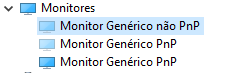

A placa de vídeo causa travamentos do sistema de forma intermitente e aleatória, que independem do que esteja sendo feito na máquina.
Para dar uma ideia, esse gif com um fundo preto e o cursor demonstra o que acontece:
Os travamentos ocorrem de forma irregular, pode ocorrer diariamente, uma ou várias vezes, ou levar semanas sem travar.
Quando o travamento ocorre, dura normalmente entre 2 a 30 segundos.
Os travamentos só ocorrem no Windows e com o driver da placa de vídeo instalado, já testei com 5~6 versões de drivers da AMD diferentes e todos apresentaram o mesmo comportamento.
Quando o driver da fabricante não está instalado, não ocorre travamentos.
Quando ocorria um travamento eu notei que ao mesmo tempo era reproduzido o som de sistema de conexão e desconexão de dispositivos USB (pendrive, teclado, mouse etc) do Windows:
Levando em conta que estes sons só aparecem quando algum periférico é conectado/desconectado, resolvi verificar se havia algum dispositivo externo causando o travamento usando um programa chamado Plug-and-Play Monitor, e descobri que toda vez que o travamento ocorria era detectada a conexão e a desconexão de um monitor (inexistente) diversas vezes durante o intervalo do travamento. O que pode ser verificado neste log aqui.
Usei tambem o programa Nirsoft's multiMonitor Tool que também mostrou um segundo monitor inexistente como pode ser visto aqui.
No gerenciador de dispositivos do windows também mostra esse monitor fantasma que nunca foi conectado(Monitor Genérico não PnP), que no momento desse print se encontra desconectado:

Isso foi o que descobri, como não tenho conhecimento sobre placas de vídeo não posso afirmar o que é exatamente a causa. Talvez algum mal contato no DisplayPort ou no Chip da placa de vídeo que detecta monitores.
Somente sei que estes detalhes podem auxiliar no Diagnóstico Final.